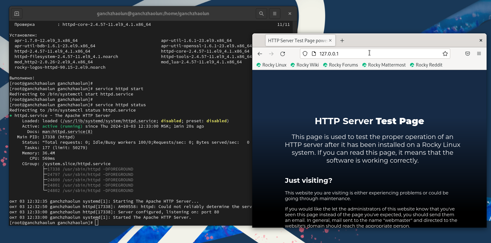
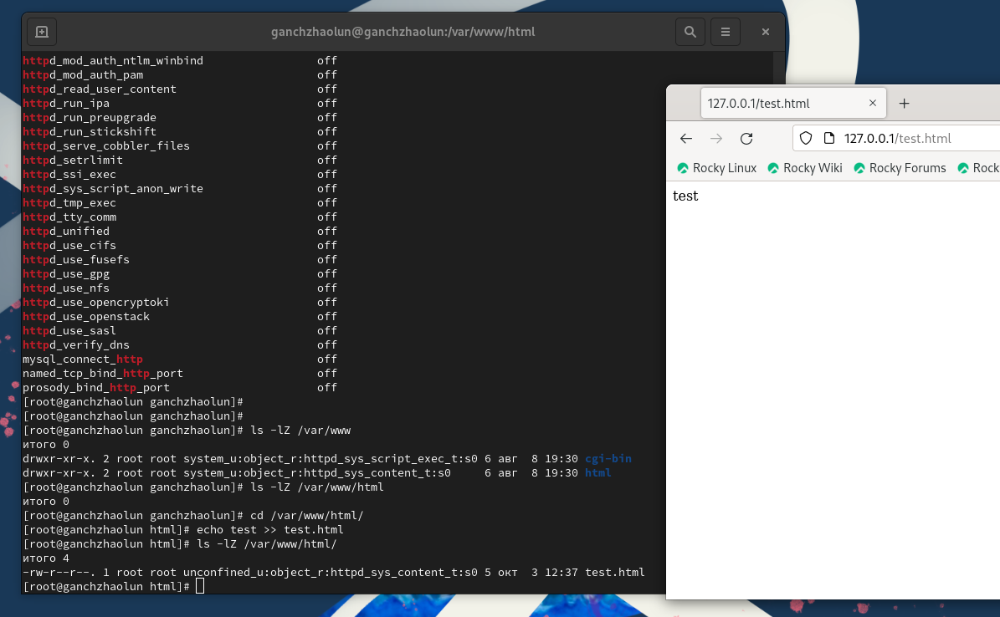
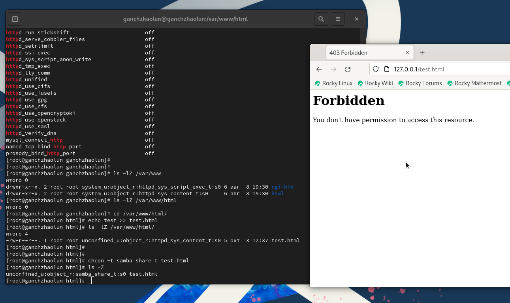
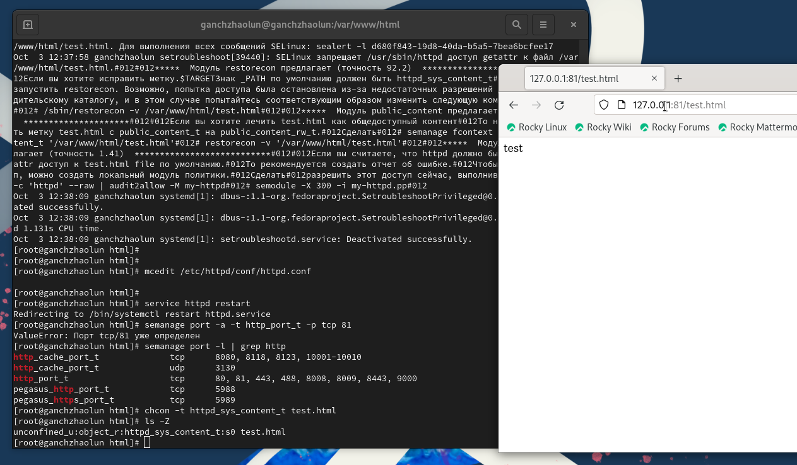

3 октября, 2024, Москва, Россия
SELinux или Security Enhanced Linux — это улучшенный механизм управления доступом, разработанный Агентством национальной безопасности США (АНБ США) для предотвращения злонамеренных вторжений. Он реализует принудительную (или мандатную) модель управления доступом (англ. Mandatory Access Control, MAC) поверх существующей дискреционной (или избирательной) модели (англ. Discretionary Access Control, DAC), то есть разрешений на чтение, запись, выполнение.
Apache – это свободное программное обеспечение для размещения веб-сервера. Он хорошо показывает себя в работе с масштабными проектами, поэтому заслуженно считается одним из самых популярных веб-серверов. Кроме того, Apache очень гибок в плане настройки, что даёт возможность реализовать все особенности размещаемого веб-ресурса.
Развить навыки администрирования ОС Linux. Получить первое практическое знакомство с технологией SELinux. Проверить работу SELinx на практике совместно с веб-сервером Apache




В процессе выполнения лабораторной работы мною были получены базовые навыки работы с технологией seLinux.